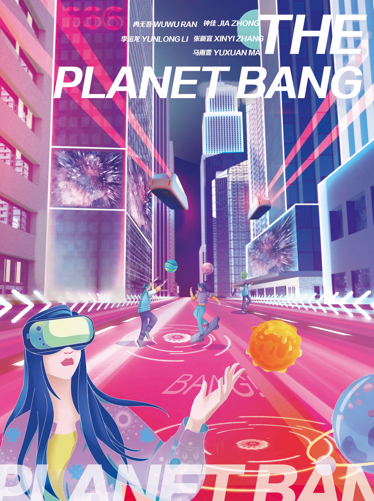
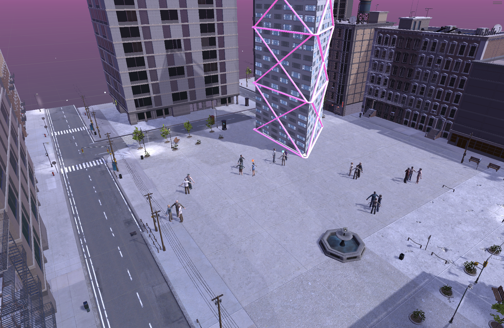
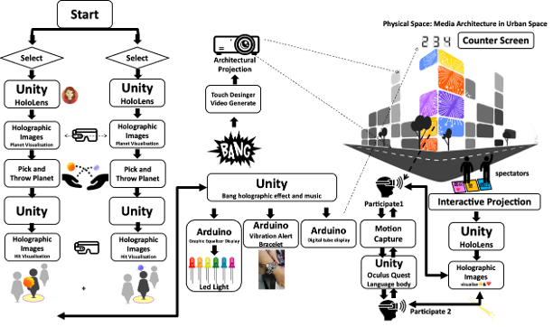
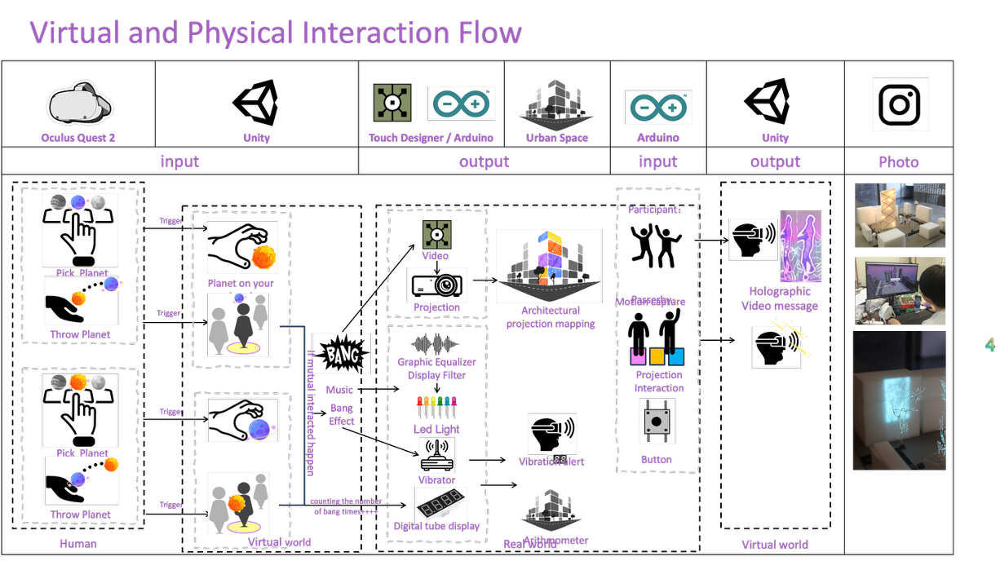
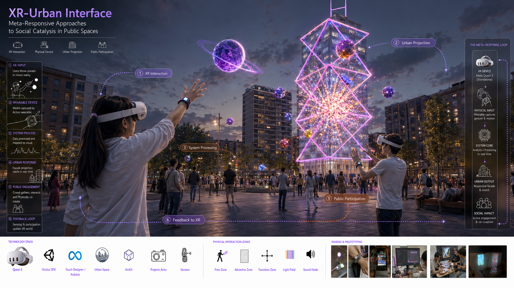
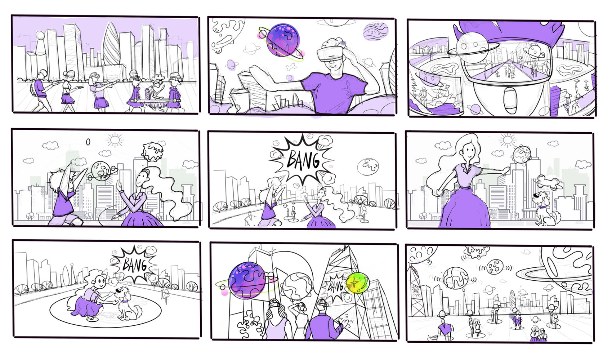
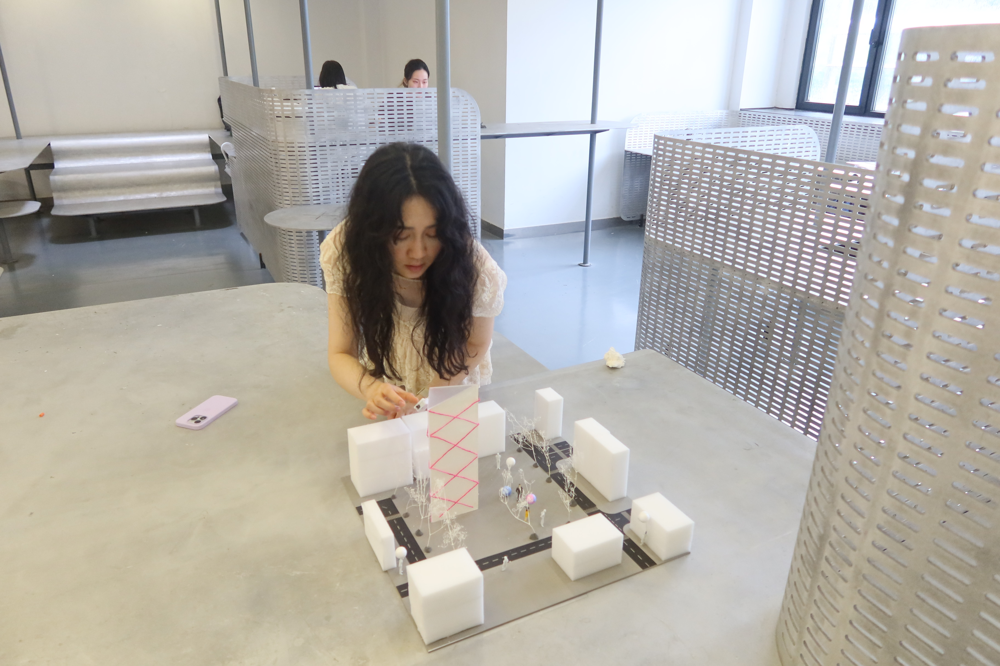
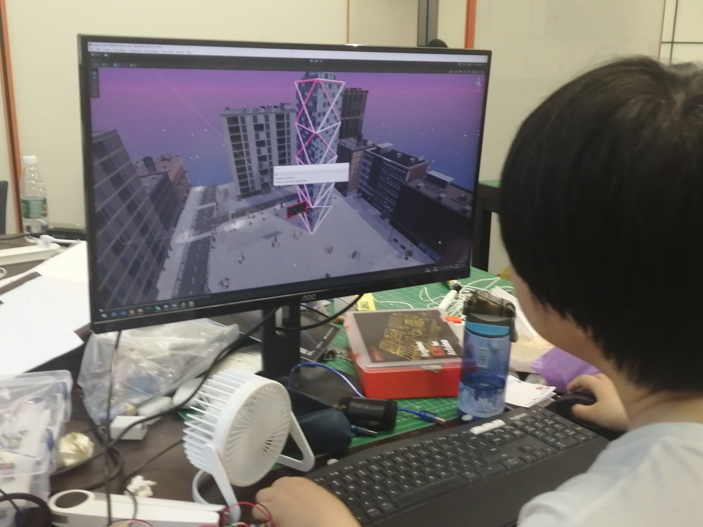

The Planet Bang
City as Interface: a speculative mixed-reality urban experience that turns personal planet-throwing interactions into public media architecture, tactile alerts, and shared encounters in physical space.

A seven-day teamwork workshop at Tongji University, Shanghai.
The Planet Bang was developed as a teamwork project during DigitalFutures 2023, a seven-day workshop hosted in June 2023 at Tongji University in Shanghai. The workshop setting shaped the project as a fast-moving prototype that combined speculative storytelling, mixed-reality interaction, physical computing, projection testing, and collaborative making.
Format
Teamwork workshop project
Program
DigitalFutures 2023
Time
June 2023, seven days
Location
Tongji University, Shanghai
A near-future public square where looking up becomes part of the game.
The project imagines a city where wearable XR devices have replaced smartphones as the default public interface. As people become absorbed in personalized virtual worlds, the social value of physical public space begins to fade. The Planet Bang responds to this scenario by transforming the city square into a playful shared interface.
Through design fiction and an interactive XR prototype, the work asks how immersive devices can be redirected away from isolation and toward social catalysis. Instead of treating media architecture as a passive screen, the project turns the facade, the headset, the body, and the ground plane into a connected interaction system.
Virtual planets collide, then the city answers.
Participants wearing XR headsets discover each other's planets in the square. When two players choose to throw their planets toward one another, the collision triggers a chain reaction across virtual and physical layers.

A meta-responsive bridge between headset, facade, wearable device, and pedestrian space.
The prototype connects Unity, XR devices, Arduino components, TouchDesigner, projection mapping, motion capture, and physical interaction zones. Each interaction is designed as a feedback loop: an action in the virtual world produces a public spatial response, while audience actions in the square return to the player's immersive interface.

Interaction processing: the Unity, TouchDesigner, Arduino, projection, motion capture, and holographic feedback workflow.

Virtual and physical interaction flow: XR inputs, projection outputs, Arduino feedback, passerby participation, and documentation photos.
Discover
Players perceive surrounding participants and their planets through the XR interface.
Throw
Gestural planet pitching initiates a shared game action between two participants.
Bang
A mutual collision creates visual, sonic, tactile, and architectural feedback.
Return
Passerby reactions are sensed and translated back into holographic messages.
XR-Urban Interface as a meta-responsive public-space system.
The concept diagram presents the project as an urban feedback loop: XR interaction activates the wearable device, the physical device triggers the architectural projection, the crowd responds in public space, and the system returns that social signal to the XR layer.

From speculative storyboard to working physical-digital model.
The project develops across narrative storyboard, interaction processing, real model fabrication, device modelling, Unity programming, and projection testing. The prototype positions urban media not as decoration, but as a social mediator that can invite spectators into a collective event.
By shifting attention from isolated digital engagement toward shared spatial cues, The Planet Bang explores how future XR interfaces might support public life rather than quietly replace it.

Model tests, projected scenes, and interaction rehearsals.


